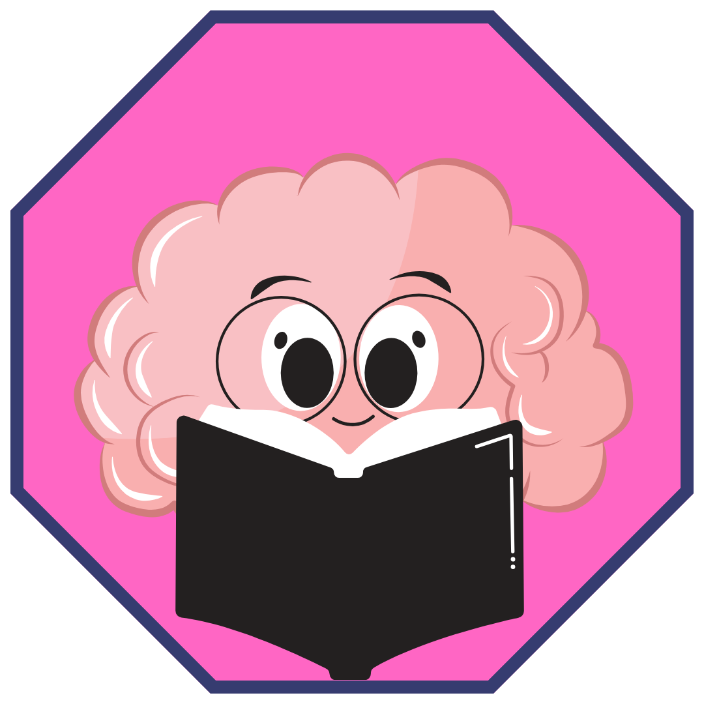

function detectOS() {
  const userAgent = navigator.userAgent || navigator.vendor || window.opera;
  if (/android/i.test(userAgent)) {
    return 'Android';
  }
  if (/iPad|iPhone|iPod/.test(userAgent) && !window.MSStream) {
    return 'iOS';
  }
  return 'Unknown';
}

function isARSupported() {
  return navigator.xr && navigator.xr.isSessionSupported('immersive-ar');
}

function showUnsupportedMessage() {
  const message = document.createElement('div');
  message.style.position = 'absolute';
  message.style.top = '50%';
  message.style.left = '50%';
  message.style.transform = 'translate(-50%, -50%)';
  message.style.textAlign = 'center';
  message.innerHTML = 'מכשירך אינו תומך ב-AR. אנא נסה במכשיר אחר.';
  document.body.appendChild(message);
}

function init() {
  const os = detectOS();
  
  if (os === 'Unknown' || !isARSupported()) {
    showUnsupportedMessage();
    return;
  }
<!DOCTYPE html>
<html lang="en">
<head>
    <meta charset="UTF-8">
    <meta name="viewport" content="width=device-width, initial-scale=1.0">
    <title>AR Dancing Character</title>
    <script src="https://aframe.io/releases/1.2.0/aframe.min.js"></script>
    <script src="https://cdn.jsdelivr.net/gh/AR-js-org/AR.js/aframe/build/aframe-ar.min.js"></script>
    <script src="https://cdn.jsdelivr.net/gh/donmccurdy/aframe-extras@v6.1.1/dist/aframe-extras.min.js"></script>
    <style>
        .button-container {
            position: absolute;
            bottom: 20px;
            left: 0;
            width: 100%;
            text-align: center;
            z-index: 10;
        }

        .visit-site-button {
            padding: 10px 20px;
            background-color: pink;
            border: none;
            border-radius: 5px;
            font-size: 16px;
            cursor: pointer;
            color: white;
        }

        .pink-border {
            position: absolute;
            top: 10%;
            left: 10%;
            width: 80%;
            height: 60%;
            border: 4px solid hotpink;
            box-sizing: border-box;
            z-index: 5;
        }
    </style>
</head>
<body style="margin: 0; overflow: hidden;">
    <!-- Pink border to guide trigger placement -->
    <div class="pink-border"></div>

    <!-- AR Scene -->
    <a-scene embedded arjs="sourceType: webcam; debugUIEnabled: false;">
        <a-assets>
                    
        </a-assets>
 <!-- Load the images  -->
            
            
            
            
            
            
            
            
            
            
        <!-- Define the markers and their associated images and animations -->
        <a-marker type="pattern" url="trigger.patt">
            <a-image src="#model-image" position="0 0 0" scale="1 1 1" rotation="-120 0 0"></a-image>
           
       

  var arToolkitSource = new THREEx.ArToolkitSource({
    sourceType: 'webcam',
  });

  arToolkitSource.init(function onReady() {
    onResize();
  });
  
  window.addEventListener('resize', function() {
    onResize();
  });
  
  var arToolkitContext = new THREEx.ArToolkitContext({
    cameraParametersUrl: 'data/camera_para.dat',
    detectionMode: 'mono',
  });
  
  arToolkitContext.init(function onCompleted() {
    camera.projectionMatrix.copy(arToolkitContext.getProjectionMatrix());
  });

  if (os === 'Android') {
    arToolkitContext.arController.orientation = 'portrait';
    arToolkitContext.arController.options.orientation = 'portrait';
  }
                
                    
        </a-marker>

        <!-- Repeat the above structure for other markers (trigger1.patt to trigger9.patt) -->
  <a-marker type="pattern" url="trigger1.patt">
            <a-image src="#model-image1" position="0 0 0" scale="1 1 1" rotation="-120 0 0"></a-image>
            <a-entity gltf-model="#animated-model" 
                      position="0.7 0 1" 
                      scale="0.7 0.7 0.7" 
                      rotation="-120 0 0" 
                      animation-mixer="clip: Armature_Animation; loop: repeat; timeScale: 1;">
            </a-entity>
        </a-marker>

<a-marker type="pattern" url="trigger2.patt">
            <a-image src="#model-image2" position="0 0 0" scale="1 1 1" rotation="-120 0 0"></a-image>
            <a-entity gltf-model="#animated-model" 
                      position="0.7 0 1" 
                      scale="0.7 0.7 0.7" 
                      rotation="-120 0 0" 
                      animation-mixer="clip: Armature_Animation; loop: repeat; timeScale: 1;">
            </a-entity>
        </a-marker>

<a-marker type="pattern" url="trigger3.patt">
            <a-image src="#model-image3" position="0 0 0" scale="1 1 1" rotation="-120 0 0"></a-image>
            <a-entity gltf-model="#animated-model" 
                      position="0.7 0 1" 
                      scale="0.7 0.7 0.7" 
                      rotation="-120 0 0" 
                      animation-mixer="clip: Armature_Animation; loop: repeat; timeScale: 1;">
            </a-entity>
        </a-marker>

<a-marker type="pattern" url="trigger4.patt">
            <a-image src="#model-image4" position="0 0 0" scale="1 1 1" rotation="-120 0 0"></a-image>
            <a-entity gltf-model="#animated-model" 
                      position="0.7 0 1" 
                      scale="0.7 0.7 0.7" 
                      rotation="-120 0 0" 
                      animation-mixer="clip: Armature_Animation; loop: repeat; timeScale: 1;">
            </a-entity>
        </a-marker>

<a-marker type="pattern" url="trigger5.patt">
            <a-image src="#model-image5" position="0 0 0" scale="1 1 1" rotation="-120 0 0"></a-image>
            <a-entity gltf-model="#animated-model" 
                      position="0.7 0 1" 
                      scale="0.7 0.7 0.7" 
                      rotation="-120 0 0" 
                      animation-mixer="clip: Armature_Animation; loop: repeat; timeScale: 1;">
            </a-entity>
        </a-marker>

<a-marker type="pattern" url="trigger6.patt">
            <a-image src="#model-image6" position="0 0 0" scale="1 1 1" rotation="-120 0 0"></a-image>
            <a-entity gltf-model="#animated-model" 
                      position="0.7 0 1" 
                      scale="0.7 0.7 0.7" 
                      rotation="-120 0 0" 
                      animation-mixer="clip: Armature_Animation; loop: repeat; timeScale: 1;">
            </a-entity>
        </a-marker>

<a-marker type="pattern" url="trigger7.patt">
            <a-image src="#model-image7" position="0 0 0" scale="1 1 1" rotation="-120 0 0"></a-image>
            <a-entity gltf-model="#animated-model" 
                      position="0.7 0 1" 
                      scale="0.7 0.7 0.7" 
                      rotation="-120 0 0" 
                      animation-mixer="clip: Armature_Animation; loop: repeat; timeScale: 1;">
            </a-entity>
        </a-marker>

<a-marker type="pattern" url="trigger8.patt">
            <a-image src="#model-image8" position="0 0 0" scale="1 1 1" rotation="-120 0 0"></a-image>
            <a-entity gltf-model="#animated-model" 
                      position="0.7 0 1" 
                      scale="0.7 0.7 0.7" 
                      rotation="-120 0 0" 
                      animation-mixer="clip: Armature_Animation; loop: repeat; timeScale: 1;">
            </a-entity>
        </a-marker>

<a-marker type="pattern" url="trigger9.patt">
            <a-image src="#model-image9" position="0 0 0" scale="1 1 1" rotation="-120 0 0"></a-image>
            <a-entity gltf-model="#animated-model" 
                      position="0.7 0 1" 
                      scale="0.7 0.7 0.7" 
                      rotation="-120 0 0" 
                      animation-mixer="clip: Armature_Animation; loop: repeat; timeScale: 1;">
            </a-entity>
        </a-marker>

        <!-- Camera -->
        <a-entity camera></a-entity>
    </a-scene>

    
        
    </div>
</body>
</html>
  

  function onResize() {
    arToolkitSource.onResizeElement();
    arToolkitSource.copyElementSizeTo(renderer.domElement);
    if (arToolkitContext.arController !== null) {
      arToolkitSource.copyElementSizeTo(arToolkitContext.arController.canvas);
    }
  }

  function animate() {
    requestAnimationFrame(animate);
    if (arToolkitSource.ready !== false) {
      arToolkitContext.update(arToolkitSource.domElement);
    }
    renderer.render(scene, camera);
  }

  requestAnimationFrame(animate);
}

init();